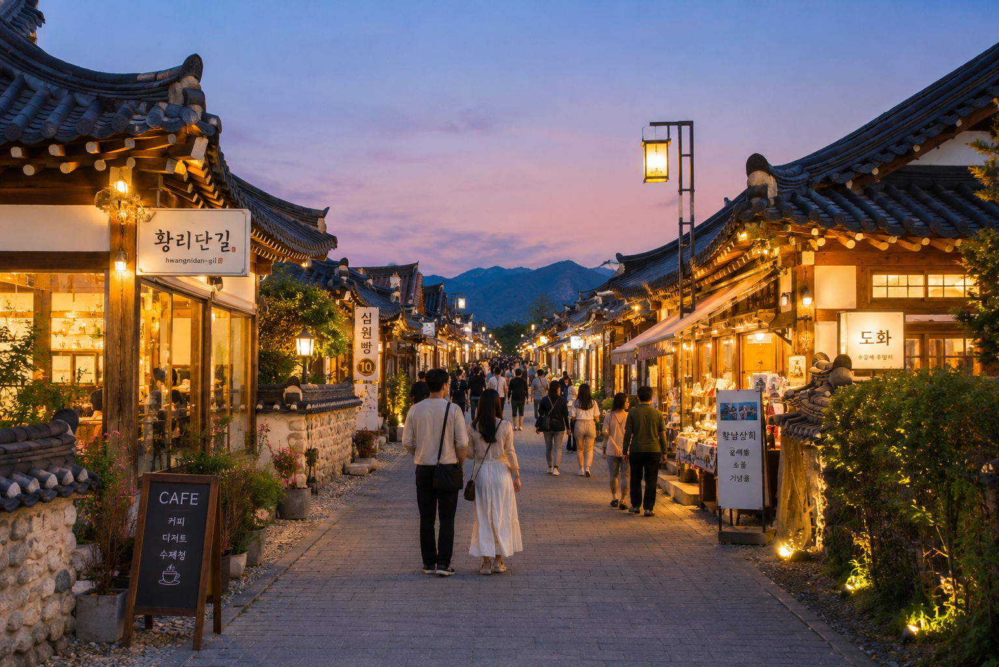
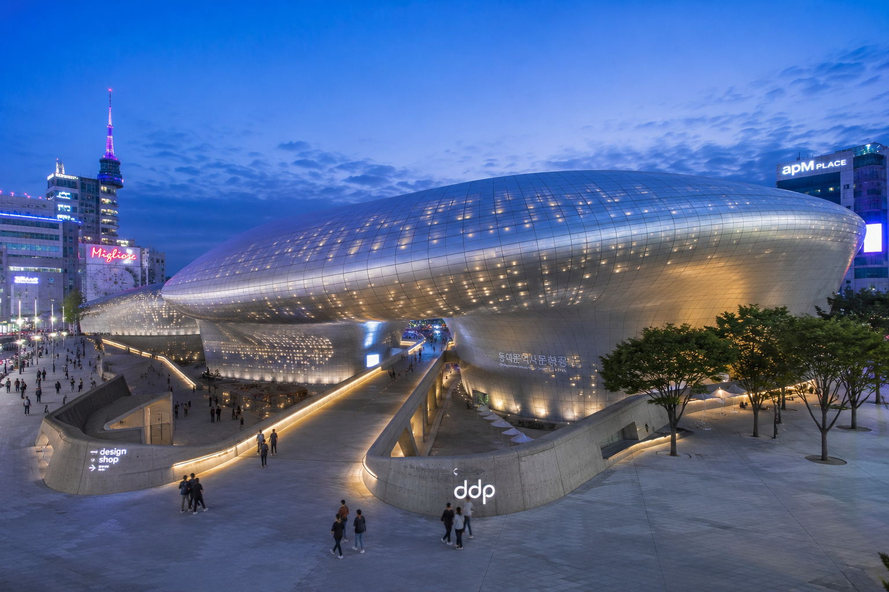

Theme 01 · Forest
숲과 산책
초록빛 나무 아래 천천히 걷는 것만으로도 충분한, 자연이 주는 고요한 위로.


테마로 떠나는 국내 여행지 가이드 · 7가지 테마
Theme 01 · Forest
초록빛 나무 아래 천천히 걷는 것만으로도 충분한, 자연이 주는 고요한 위로.
Theme 02 · Ocean
파도 소리와 짠 바람, 수평선 너머로 펼쳐지는 무한한 해방감.


Theme 03 · History
켜켜이 쌓인 시간의 결을 따라 걷다 보면 지금 이 순간이 더 선명해집니다.



Theme 04 · City
불빛이 가장 아름다운 시간, 도시의 리듬에 몸을 맡겨보세요.



Theme 05 · Food
먹는 것이 곧 여행이다. 그 지역만의 맛을 찾아 골목 구석구석을 누빕니다.


Theme 06 · Activity
짜릿한 순간이 기억을 만든다. 몸으로 느끼는 여행의 진짜 재미.


Theme 07 · Camping
별이 보이는 밤, 모닥불 냄새, 새소리로 깨는 아침. 자연 속에서의 하루.